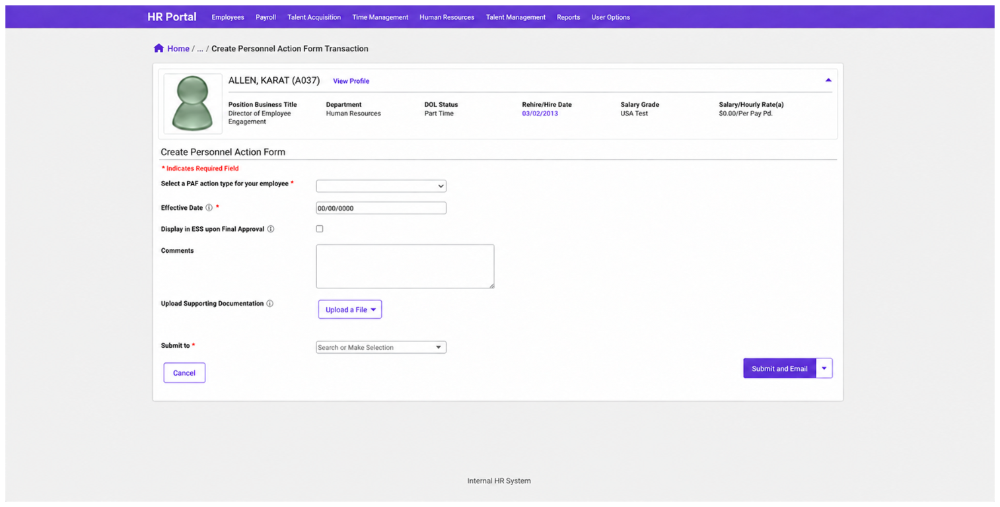
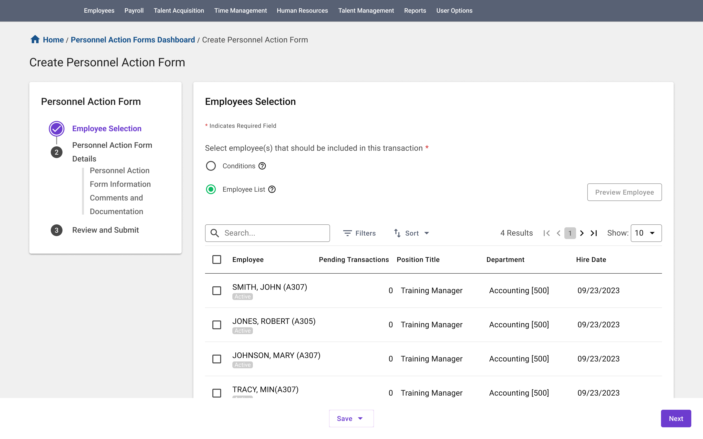
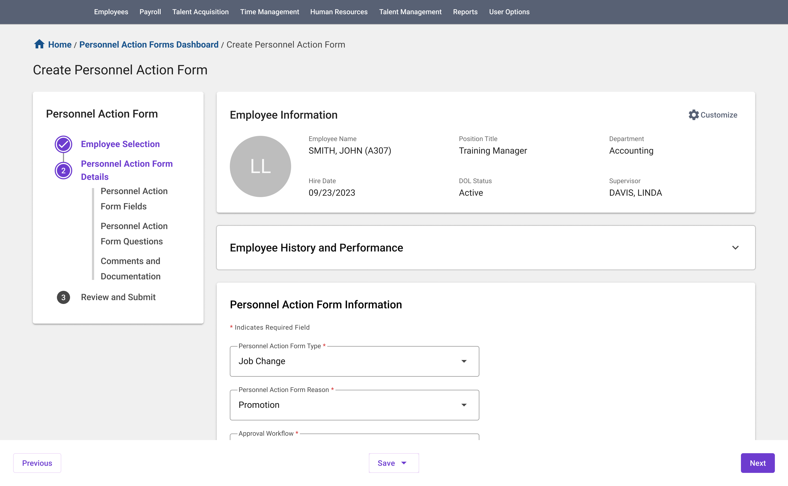
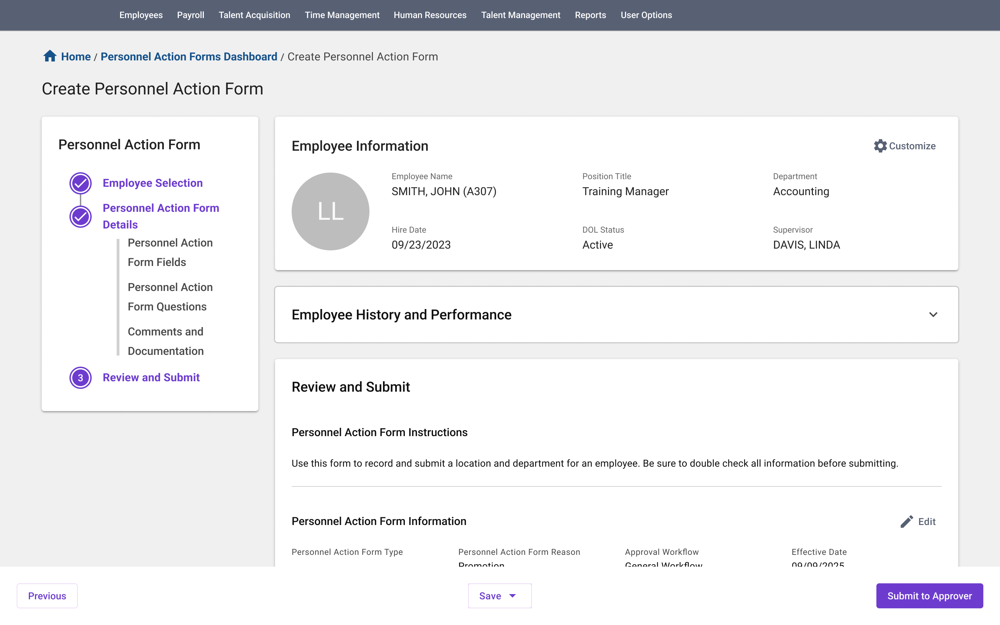
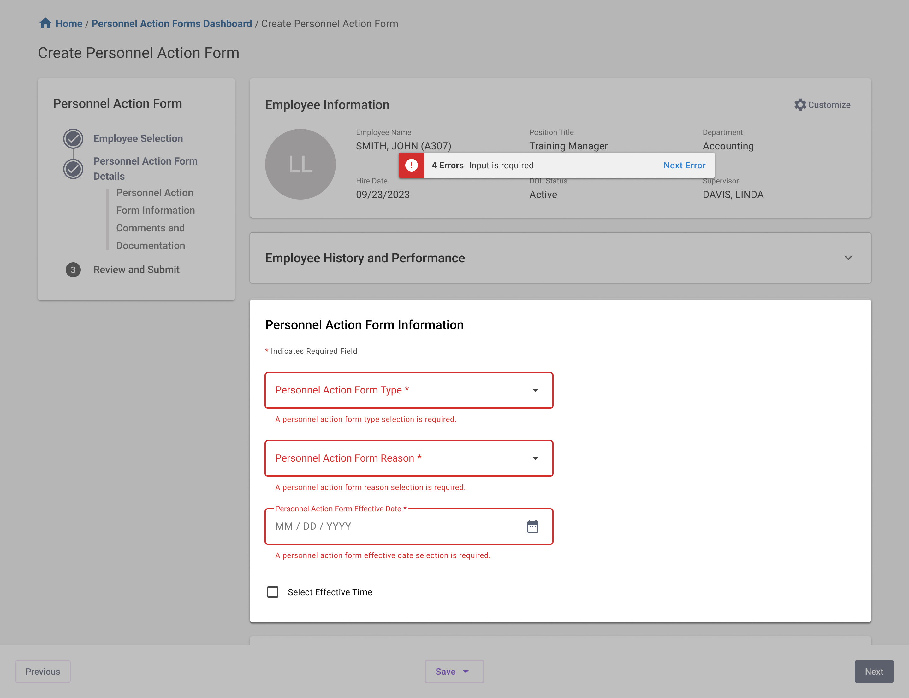
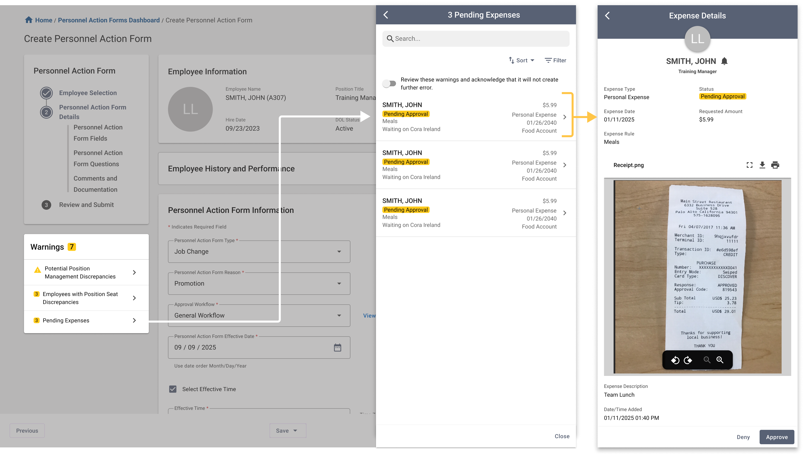
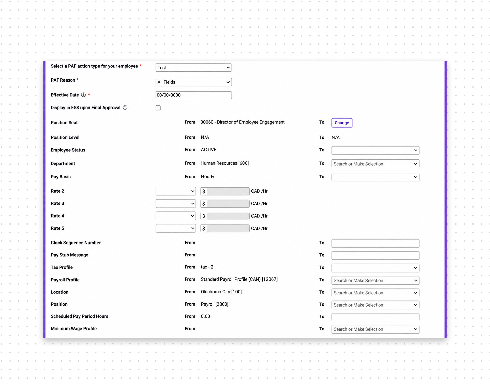
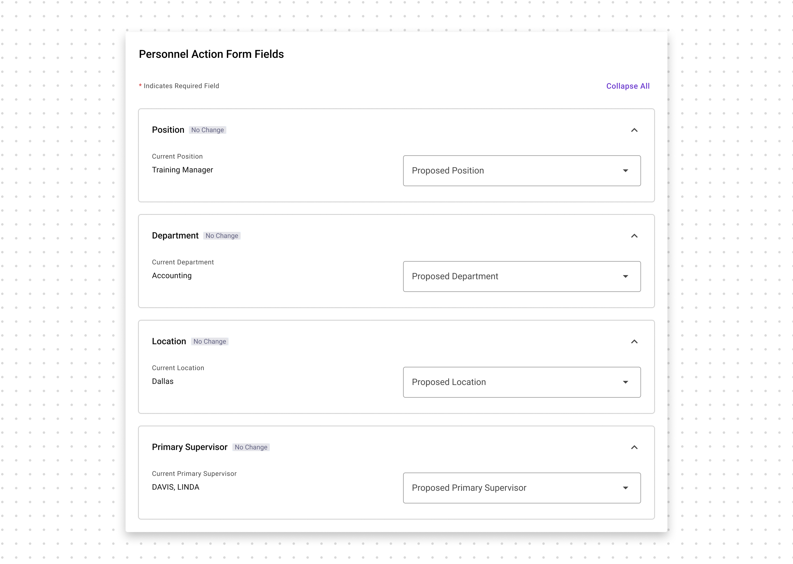
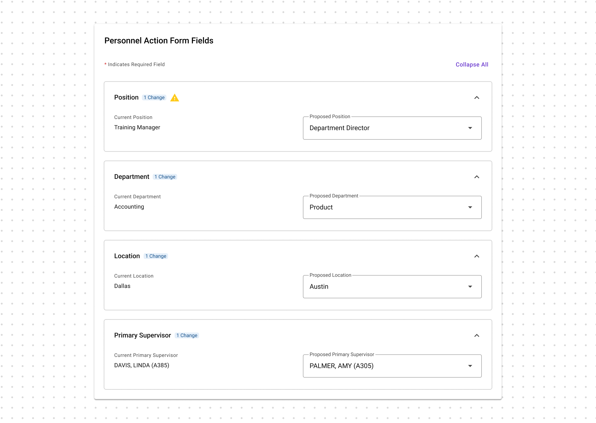
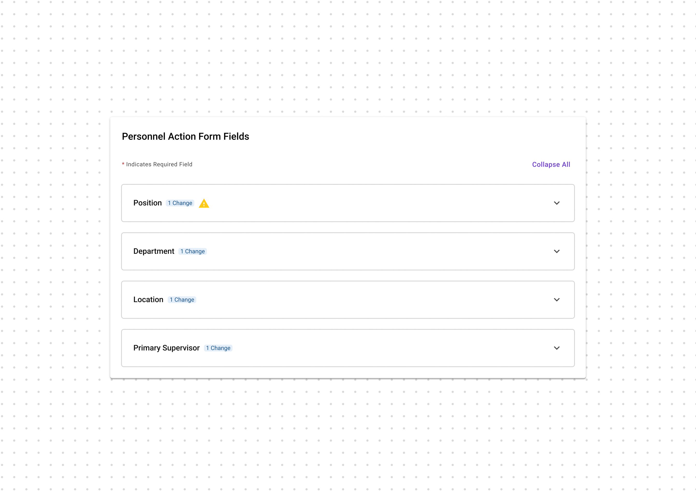

Restructure dense, fragmented information into a clearer flow that surfaces the right information when users need it.
Personnel Action Form Redesign
Rebuilt the system behind hundreds of thousands of decisions that shape employees’ careers.

When a form changes someone’s career, there’s no room for uncertainty.
Promotions. Transfers. Terminations. Behind every one of these decisions is a Personnel Action Form (PAF), a workflow where a single mistake can ripple across pay, access, and employee records. But the legacy experience made leaders second-guess themselves. Critical information was scattered, navigation was cumbersome, and too much of the experience became a cycle of asking, “Where do I click next?” and “Let me triple-check the number.” I led the redesign to turn this high-stakes, error-prone workflow into an experience leaders could trust, so they could spend less time fighting the system and more time making the decisions that matter.
00
Project in a nutshell
Impact
350K+ managers
Priority
Top product-roadmap priority, affecting 27 RMs
Goal
Help managers complete and approve personnel actions with greater confidence and fewer opportunities for error.
Scope
End-to-end redesign of the manager-side Personnel Action Form, from creation through resolution.
System Analysis→Roadmap Alignment→User Interviews→Identify Key Challenges→Design→Validation→Design Delivery
Approach: I used user interviews, workflow analysis, affinity mapping, prototyping, and usability testing to challenge the initial brief, uncover deeper workflow problems, and shape a more intuitive end-to-end experience.
Key Design Challenges
Reduce uncertainty around critical actions through clearer feedback, guidance, and interaction states.
01
What was asked
Modernize the UI of the existing Personnel Action Form, from creation to resolution.
From Product Management
“modernize the UI, align the module with the rest of the product, and improve the overall user experience.”
The redesign did not cover the full module.

I could modernize the interface, but as the module’s lead designer, I knew a visual refresh alone would not resolve the deeper frustrations. Users needed more than updated aesthetics.
02
Beyond the Brief
To look beyond the brief, I secured buy-in from the product and design managers to interview users about the PAF module’s most critical flows.
We conducted five interviews with people across four key groups:
HR Managers
Admins and power users who work with PAF frequently
Department Managers
The most common users of the workflow
Client Setup Specialists
User trainers with firsthand knowledge of where customers struggle
Sales Representatives
A customer-facing perspective on recurring pain points and product gaps
We combined these interviews with an evaluation of the existing experience from both design and product perspectives. Together, we examined the experience through three lenses: user, design, and business.
What We Heard
Approval Flow & Visibility
- Unclear status and approval progress
- Approvers had to leave the flow to make changes
- Users didn’t always know what happened after submitting
Data Accuracy & Validation
- Users manually caught errors and inconsistencies
- Important changes required constant double-checking
- Limited validation before submission
Template & Field Complexity
- Too many templates and unclear naming
- Irrelevant fields created unnecessary noise
- Dense forms made it difficult to identify what mattered
Batch & Bulk Actions
- Large actions required repetitive manual work
- Bulk workflows introduced additional risk and complexity
Navigation & Submission
- Users weren’t always sure where actions would lead
- Fragmented navigation interrupted the workflow
- Multiple paths created unnecessary confusion
System & Workflow Gaps
- Users relied on external tools to complete parts of the workflow
- Automation and integrations didn’t always support the full process
- Some workflows extended beyond what the existing PAF experience could handle
From 30+ Findings to Two Design Challenges
The research surfaced friction across nearly every part of the PAF experience. But not every problem could—or should—be solved in a single redesign. When I mapped the findings against the project scope and areas where design could have the greatest immediate impact, two challenges emerged:
Bring Order to Complexity
Across templates, fields, navigation, and workflows, the same problem kept appearing: users struggled to identify what information mattered and where to find it. The opportunity was to restructure the experience and surface information where it was most valuable.
Design for Confidence
Across validation, submission, approval, and field interactions, another pattern emerged: users were repeatedly forced to double-check the system instead of being able to trust it. The opportunity was to provide clearer feedback, validation, and guidance around critical actions.
03
Understanding the scope
These two themes often appear in design case studies, but the scale of this module made each one especially tangible.
8 field types with unique interactions across 50+ individual fields27 pending and developing RMs impacted2 core experiences with single and batch actions: Create and Approve9 newly added features3 different personas10 types of warnings and errors45 unique flows5 dynamic permission and workflow changes
Challenge 1: Information Architecture
Bring Order to Complexity
How might we organize PAF around the decisions managers need to make, so they can find the right information at the right moment without getting lost in the complexity of the form?
Stepper or One-Page?
The current PAF flow had an awkward split: employee selection happened first, then users landed on one long creation page. The selection step worked, but it felt disconnected. Once inside the form, everything was packed into the same page with limited hierarchy.
One long creation experience
Select EmployeesCreate PAF
Employee selection feels disconnected. Most work happens on one long page.
A clearer three-step flow
1 Employee Selection2 Create PAF3 Review & Submit
The biggest change wasn’t adding more pages. It was creating a clearer beginning, middle, and end.
Why not add more steps?
At one point, we considered putting PAF setup—type, template, reason, effective date, and workflow—in its own step, then showing the generated form fields in the next one.
On paper, that structure made sense. In practice, it didn’t match how users worked.
CHOSENEmployee SelectionCreate PAF — setup + dynamic contentReview & Submit
So setup and dynamic content stayed together.
One page, with clearer structure
Create PAF still contains most of the transaction, but it no longer reads as one continuous form. Related information is grouped into clear sections so users can scan the page and understand where different types of work belong.



What if the page is still long?
Some PAFs are naturally more complex. Instead of adding more steps, collapsible field groups let users control how much information is visible without breaking the connection between setup and the fields it generates.
More steps weren’t the answer. Better structure was.
The goal wasn’t to break the form into as many steps as possible. It was to add structure without getting in the way of how users already work.
Challenge 2: Interaction and Feedback
Make System Feedback Visible
Not All Warnings Work the Same Way
In a high-stakes workflow, feedback needs to appear when and where users need it. In the legacy PAF, warnings lived at the top of a long page—easy to miss once users started working farther down the form.
I don’t see the warning
Inline feedback
Missing fields, invalid inputs
→ Fix it here
System warnings
Discrepancies, pending actions, downstream impact
→ Keep it visible
If it can be fixed immediately, keep it inline. If the impact reaches beyond the field, keep it persistently visible.


Feedback Beyond Errors
Feedback isn’t only about errors. Users also need confidence that the system captured what they changed.
Make Changes Easy to Scan
Users often update only a few fields in a PAF. I introduced change indicators at the section level so they can quickly see what changed without reopening or rereading every field.
Current PAF fields




The form becomes scannable by change, not just by content.
User action↓System response
Invalid input
Inline error
Fix now
System impact
Warning panel
Stay aware
Valid change
Edited status
Track change
Don’t Make Users Hunt for Feedback
The system responds at the right level—inline when users can act immediately, persistent when the impact goes further, and visible whenever something changes.
04
A Familiar Experience, Rebuilt
THE REDESIGNED EXPERIENCE, END TO END01 SELECT
Clear beginning02 CREATE
Structured workspace03 RESPOND
Visible warnings and changes04 REVIEW
Dedicated verification05 SUBMIT
Clear handoff
Clear beginning02 CREATE
Structured workspace03 RESPOND
Visible warnings and changes04 REVIEW
Dedicated verification05 SUBMIT
Clear handoff
06
Reflection and next steps
Reflection — Familiar, but Better
This project taught me that redesigning a legacy product is fundamentally different from creating something new. With dependencies across more than 30 projects, every decision had consequences beyond a single screen. Success required understanding the system deeply enough to know what to preserve, what to challenge, and where change would have the greatest impact.
The original brief focused on making the interface look better. I pushed the team to look deeper: if we were already investing in modernization, we should also address the usability problems underneath it. That shift transformed the project from a visual refresh into a meaningful experience redesign.
What I Learned
Think beyond the screen.
Every decision could affect more than 30 connected projects.
Manage complexity early.
Clear scope, dependencies, and decision-making were essential.
Design within constraints.
Preserve familiarity while improving clarity and usability.
Let go when necessary.
A mature solution isn’t always the right one.
Push back with purpose.
I challenged a visual-refresh brief to address the deeper experience.
Leading the process end to end gave me ownership of every design decision—from understanding a complex legacy system to shaping a solution that could scale across it.
The goal wasn’t to change everything. It was to make the right changes—and make each one count.